Refining content structure, navigation, and widgets across JioMart's homepage, listing, and product pages — turning aimless browsing into confident decisions for millions of shoppers.
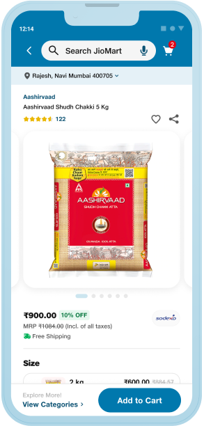
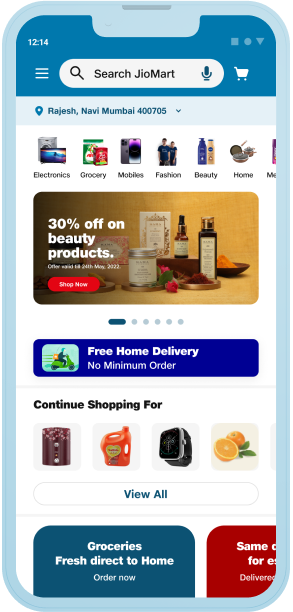
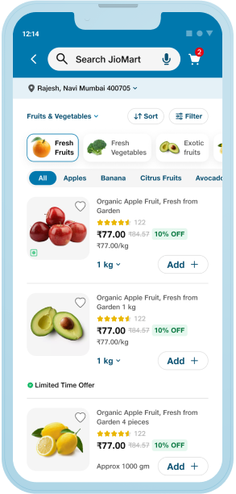
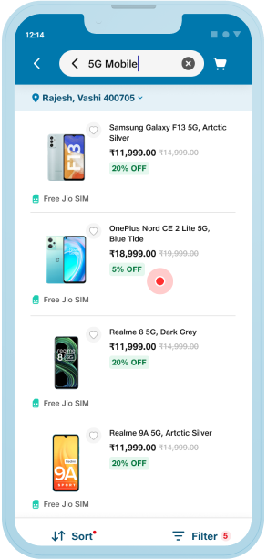
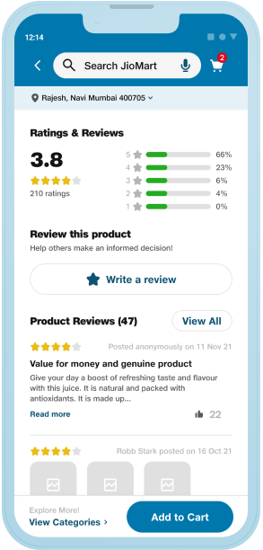
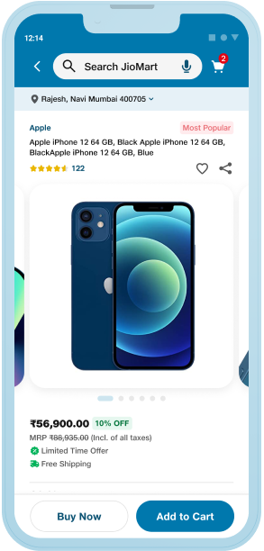
As part of Jio's central design team, I led discovery UX across the homepage, PLP, and PDP during the Design System 2.0 rollout.
Inconsistent navigation, unclear product prioritization, and limited interactivity drove high bounce, low conversion, and missed engagement.
Consistent iconography, clearer search & scan, better filters and product cards, richer PDPs, and social proof — all on DS 2.0.
Monthly active users up 65%, repeat users up 64%, revenue up 38%, and a 36% drop in customer-support calls.
JioMart serves millions of shoppers across groceries, fashion, and electronics. After improving checkout and post-order flows, I moved to the layer people spend the most time in — discovery. The goal: refine structure, navigation, and widgets across the homepage, listing (PLP), and product (PDP) pages so browsing turns into confident, informed decisions.
Heuristic evaluation, competitive scans, and heatmap/analytics data surfaced friction across every discovery surface — hurting both engagement and conversion.
Inconsistent icons and colors disrupted quick recognition, making navigation harder and slower.
Icons were hard to associate with their real-world purpose for non-tech-savvy users.
Incorrect categorization and irrelevant suggestions led to frustration and cognitive overload.
QR/image search opened blank screens; voice input misread everyday grocery terms.
No GPS auto-detection — manually entering a pin code added friction at a critical moment.
Small images, hidden variants, and buried ratings made products hard to compare and trust.
Discovery decisions came from working shoulder-to-shoulder with Jio's design team and the European DS 2.0 partners — and from putting real screens in front of real shoppers.
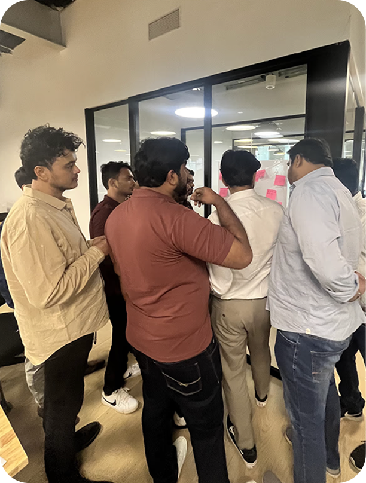
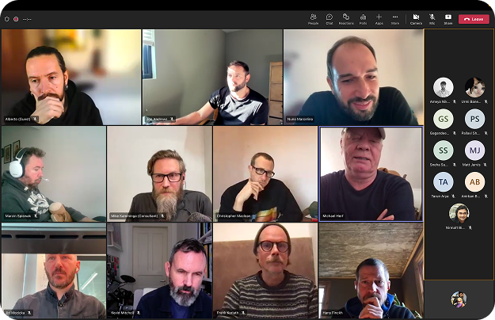
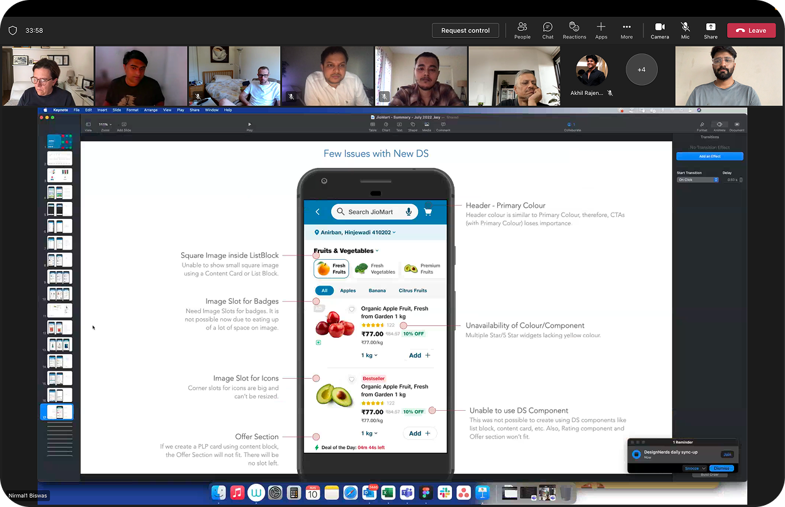
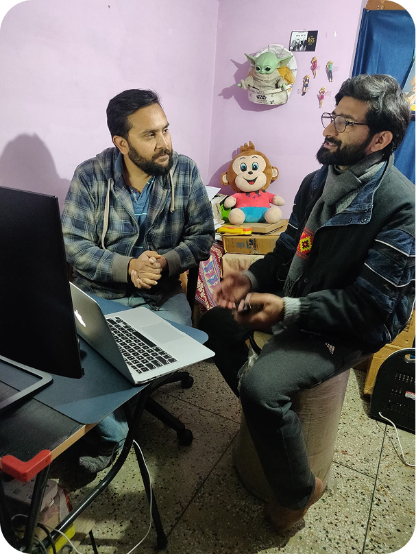
Grounded in research — competitive benchmarking, heuristic evaluation, and heatmaps — every change optimized for one thing: helping shoppers scan, compare, and decide faster on DS 2.0.
Standardized category icons and colors, clearer search & scan, accurate search categorization, real-time quantity alerts, GPS address detection, and simplified navigation.
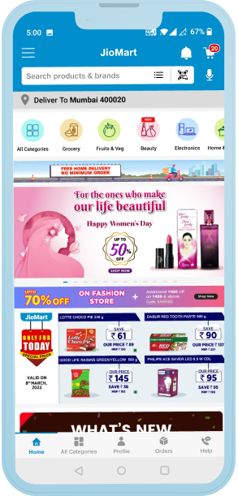
Better filters and sorting, simplified scannable cards, prominent ratings, clear pricing and offers, an intuitive wishlist, urgency tags like "Best Seller," and larger high-quality images.
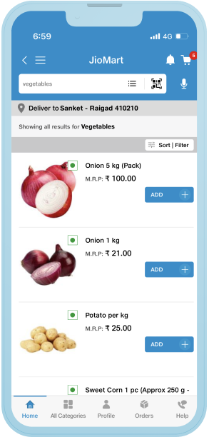
Bigger, sharper visuals for better product recall, refined categories, jargon-free labels, and smoother scroll and pagination for a category that demands comparison.
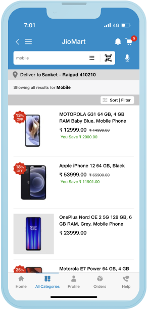
High-quality images with real-life context tags, a clear delivery location strip, brand name above product name, social signifiers (reviews, likes, shares), and product variants upfront with price and discount.
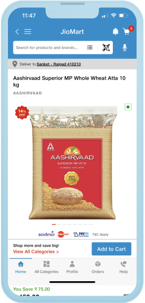
Added detailed UGC and a ratings summary with star filters, a "View All" CTA, photo uploads and likes on reviews, and a "Recently Viewed" section to make revisiting effortless.
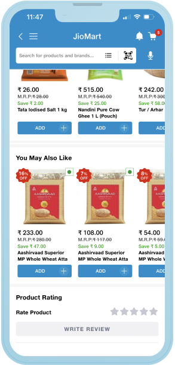
A clearer, more consistent discovery experience didn't just look better — it moved the numbers that matter, from daily orders to support load.
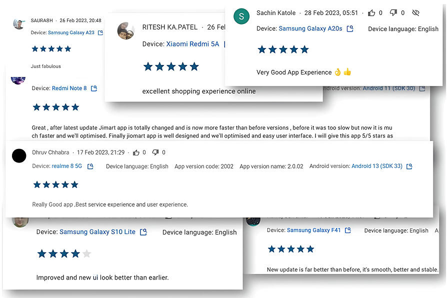